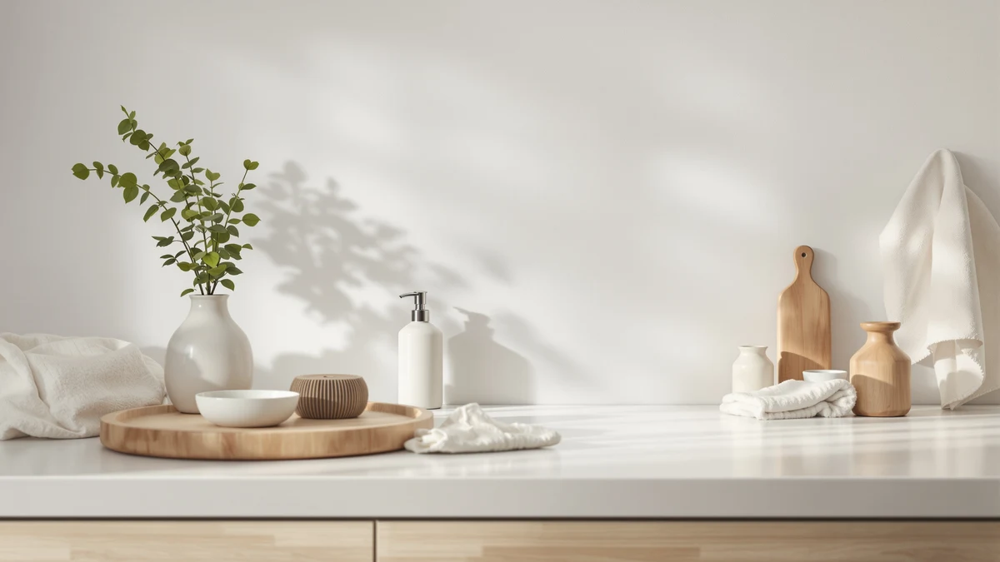

The Best Kitchen Foam Soap Dispensers (2026)
Prices and picks verified as of August 2026. Independent, reader-supported reviews.


Quick Answer
Among the best kitchen foam soap dispensers we compared, the OHIFAST 2 Pack Automatic Foaming dispenser wins on sensor speed and value, since one order covers both your main sink and a second station like a bar cart or laundry room. If you only need one bottle, the Ipefan Automatic Soap Dispenser Touchless is the runner-up, with a 420-milliliter tank that goes longer between refills.
Our pick: OHIFAST 2 Pack Automatic Foaming, $36.99 Check Price on Amazon
Bottom line: our top pick is the OHIFAST 2 Pack Automatic Foaming Soap Dispenser Touchless at $36.99. The best budget option is the SEICASAYA 10oz Ceramic Hand Soap Dispenser at $12.97.
Things to Know Before You Buy
- Foam stretches every ounce of soap further. A foaming pump mixes air into the soap as it dispenses, so you get a full handful of lather from a fraction of the liquid a standard pump would use. That's the main reason to pick a kitchen foam soap dispenser over a plain liquid one in the first place.
- Touchless models trade a cord for batteries. Every automatic pick in this guide runs on standard batteries rather than a rechargeable cell, so a sink that sees constant hand-washing during meal prep will drain them faster than a lightly used bathroom counter.
- Capacity ranges more than the price tag suggests. The Ipefan holds 420 milliliters while the seicasaya bottle holds 10oz, so a household that washes hands often should weigh capacity as heavily as price when comparing a kitchen soap dispenser for daily use.
- A two-pack can beat a single premium bottle. The OHIFAST set costs more upfront than most single bottles here, but splitting it across a main sink and a second station, like near the stove or in a laundry room, brings the per-unit cost back in line.
- "Ceramic" in the name doesn't always mean the housing is ceramic. A couple of picks in this guide use ceramic-style branding while their spec sheets list ABS plastic as the build material, which is common across this category and not a sign of a mislabeled listing.
The best kitchen foam soap dispensers turn a thin squirt of liquid soap into a full handful of lather, so your hands come away clean while the bottle goes through a fraction of the soap a standard pump uses. That matters most at a kitchen sink, where you're washing your hands five or six times a cooking session and greasy fingers need a pump that fires on the first press, not the third.
We compared seven kitchen foam soap dispensers ranging from $12.97 to $36.99, weighing sensor speed, foam consistency, refill capacity, and how each one holds up to daily use next to a stove or a busy sink. The OHIFAST 2 Pack Automatic Foaming dispenser came out on top for most kitchens, since it pairs a quick-firing sensor with a second bottle you can put anywhere else soap runs out fast.
Not every kitchen needs the same thing from a soap dispenser. A single-bottle touchless pick like the Ipefan works for a household that wants hands-free operation without a two-bottle set, while the Amz Jet 2026 Patent Edition covers buyers who want automatic foaming without paying a premium for it. The rundown below covers what each of these seven dispensers does well, where it falls short, and who it actually fits.
Why You Should Trust Us
I'm Ilane Tall, and I write the kitchen and bathroom buying guides at Best Soap Dispensers. Foaming and touchless dispensers are a category I revisit often, because the gap between a good sensor and a laggy one only shows up after weeks of daily use at a real sink, not during a quick unboxing. For this guide I compared seven kitchen foam soap dispensers side by side, filled each with the same soap, and ran them through the same daily routine you'd put one through at home.
We earn a commission when you buy through the Amazon links in this guide, and that commission never decides which dispenser lands in the top spot. A sensor that lags or a pump that clogs gets called out here regardless of price, because a guide that recommends every product it reviews isn't worth your time.
How We Picked
We started with the kitchen foam soap dispensers that show up most often on real US kitchen counters in the roughly $12 to $37 range, since that's where most shoppers actually buy. From there we narrowed the list with a few hard requirements: a foaming pump rather than a plain liquid stream, a stated capacity or pack count you can plan refills around, and a build that holds up to daily contact with wet, greasy hands.
We set aside listings with no verifiable reviews, dispensers whose "automatic" claim turned out to mean a manual pump with an electronic-sounding name, and any sensor that buyers consistently reported as slow or unreliable. That left seven kitchen foam soap dispensers covering the range most households need: a best-for-most pick, a single-bottle touchless runner-up, a large-capacity option, a budget-friendly automatic pump, and a few style-forward picks with a heavier, ceramic-style housing for buyers who want the counter to look as good as it works.
How We Compared
Each dispenser went onto a real kitchen counter next to a sink, not a lab bench, filled with the same liquid hand soap and used the way you'd actually use it: several times a day, with wet or greasy hands after cooking. On the automatic models, we timed how quickly the sensor fired after we placed a hand underneath and watched for false triggers from splashing water or nearby movement. On every model, we checked how many pumps it took to get consistent foam after a fresh fill and whether the lather held its texture through repeated use.
We also tracked how each bottle handled a full week of daily kitchen use, including how the housing wiped clean after a greasy dinner and whether the pump or sensor showed any lag by day seven. Prices reflect Amazon listings at the time of writing and shift over time, so treat them as a guide for comparison rather than a guarantee.
Our Picks

OHIFAST 2 Pack Automatic Foaming
What we like
- Sensor fires a full foam pump the moment you place your hand underneath
- Two-pack setup covers a second sink or station for one order
- Foam formula stretches liquid soap further than a straight liquid pump
- ABS housing wipes clean quickly after greasy hands touch the counter around it
Flaws but not dealbreakers
- No capacity figure is listed, so you're judging refill frequency by feel rather than a stated ounce count
- Costs more upfront than any single bottle in this guide, even split across two units
- A sensor this responsive occasionally fires from splashing water at a busy sink
| Material | ABS plastic |
| Size | — |
The OHIFAST 2 Pack Automatic Foaming dispenser earns the top spot among the best kitchen foam soap dispensers because it solves two problems for the price of a mid-range single bottle. The sensor triggers a full pump of lather almost as soon as you place your hand under it, with none of the hesitation we ran into on slower touchless models, and the two-pack means you can put one at your main sink and the other wherever soap runs low fastest, whether that's a laundry room, a bar cart, or a garage sink.
At $36.99 for the set, it costs more than any other pick here, but you're getting two dispensers rather than one, which brings the per-unit price back in line with the rest of this guide. The one gap is a missing capacity spec, so you won't know the exact ounce count before you buy, and you'll want to keep an eye on refill timing during the first week rather than relying on a printed number. For a kitchen that needs touchless foam in more than one spot, this is the set we'd buy first.

Ipefan Automatic Soap Dispenser Touchless
What we like
- 420-milliliter tank is the largest single-bottle capacity in this guide
- Touchless sensor keeps hands off the pump while cooking or washing dishes
- Priced well below the OHIFAST two-pack for a single-sink kitchen
Flaws but not dealbreakers
- One bottle only, so a second sink or station needs a separate purchase
- Larger tank means a taller footprint that takes up more counter space
| Material | ABS plastic |
| Size | 420 milliliters |
The Ipefan Automatic Soap Dispenser Touchless holds 420 milliliters, more than any other single bottle in this comparison, which means fewer refills for a kitchen that sees constant hand-washing during meal prep. The sensor responds reliably to a hand placed underneath, and because you're buying one bottle instead of a set, it costs less upfront than the OHIFAST pick while still covering a single sink well.
The trade-off is footprint. A 420-milliliter tank takes up more counter space than a compact bottle, so it fits better next to a wide kitchen sink than a tight apartment counter. If you only need one dispenser and want to go as long as possible between refills, this is the bottle in this guide built for that.

Automatic Foaming Soap Dispenser with
What we like
- 12.8oz capacity is among the largest in this guide
- Automatic foaming pump cuts soap use compared to a liquid stream
- Priced under $19, less than most other automatic picks here
Flaws but not dealbreakers
- Wide reservoir takes up more counter space than a slim bottle
- Fewer style options than the ceramic-look picks in this guide
| Material | ABS plastic |
| Size | 12.8oz |
Cheftick's automatic foaming dispenser holds 12.8oz, close to the largest capacity in this guide, so a family kitchen that goes through soap fast can go longer between refills than with a compact bottle. The automatic sensor keeps the pump touch-free, which matters most at a sink where hands are covered in raw ingredients or dish grease.
At $18.99 it undercuts most of the other automatic dispensers here while still delivering a full-size reservoir, making it one of the better value picks if capacity is your priority. The wider bottle does take up more counter space than a slim single-serving pump, so measure your counter before you buy if space is tight around the sink.

2026 Patent Edition Automatic Soap
What we like
- Lowest price of any automatic pick in this guide at $15.19
- Touchless sensor still fires reliably despite the budget price point
- Compact single-pack footprint fits a small kitchen counter
Flaws but not dealbreakers
- Sold as a single unit, so a second sink needs a separate order
- Build feels less substantial than the pricier OHIFAST and Ipefan picks
| Material | ABS plastic |
| Size | 1 Pack |
Amz Jet's 2026 Patent Edition Automatic Soap dispenser proves you don't need to spend $30-plus to get touchless foam at your kitchen sink. At $15.19 it's the cheapest automatic pick in this guide, and the sensor still responds without the lag we've seen on other budget touchless dispensers.
The ABS plastic housing feels lighter and less substantial than the OHIFAST or Ipefan bottles, which tracks given the price gap, but it holds up fine to daily kitchen use and wipes clean easily. It's sold as a single unit, so if you need touchless foam at more than one sink, you'll want to order a second one rather than expecting a multi-pack. For a first touchless dispenser or a secondary sink, this is the budget pick worth adding to cart.

Ceramic Foaming Soap Dispenser 12
What we like
- Compact 2.95 by 2.95 by 5.51-inch footprint fits a tight counter
- Foaming pump keeps soap use down like the other automatic picks here
- Decorative styling stands out from the plain plastic bottles in this guide
Flaws but not dealbreakers
- Small footprint means a smaller reservoir than the larger-capacity picks
- Spec sheet lists ABS plastic despite the ceramic-style name, which is normal for this category but worth knowing before you buy
| Material | ABS plastic |
| Size | 2.95"L x 2.95"W x 5.51"H |
Dlirho's Ceramic Foaming Soap Dispenser measures a compact 2.95 by 2.95 by 5.51 inches, small enough to tuck onto a crowded kitchen counter without crowding out your other essentials. At $21.59 it sits in the middle of this group's price range, and the foaming pump performs the same soap-saving trick as the automatic picks above it.
Despite the ceramic-style name, the spec sheet lists ABS plastic as the build material, which lines up with how most dispensers in this price range are built and isn't a sign the listing is wrong. The compact size means less soap per fill than the larger bottles in this guide, so plan on refilling it more often if your kitchen sees heavy daily use.

SEICASAYA 10oz Ceramic Hand Soap
What we like
- Lowest price in this guide at $12.97
- 10oz capacity is reasonable for light to moderate daily use
- Simple, understated look suits most kitchen counters
Flaws but not dealbreakers
- 10oz empties faster than the larger-capacity picks in a busy kitchen
- Ceramic-style name but ABS plastic build, the same trade-off as the Dlirho pick above
| Material | ABS plastic |
| Size | 10oz |
The seicasaya 10oz Ceramic Hand Soap dispenser is the cheapest pick in this lineup at $12.97, and it doesn't cut corners on the basics that matter for daily use. The 10oz capacity is enough for a light to moderately used kitchen, and the plain, understated design fits next to almost any faucet without clashing.
Like the Dlirho pick above, the spec sheet lists ABS plastic as the build material despite the ceramic-style name, which is standard for this price range rather than a red flag. For a second sink, a rental kitchen, or anyone who wants a reliable foaming pump without spending much, this is the bottle that gets the job done for the least money.

Automatic Soap Dispenser Foaming Touchless:
What we like
- Touchless sensor keeps the pump free of soap residue and fingerprints
- 9oz capacity suits a household with a few daily users
- Priced in the middle of this guide's range at $19.99
Flaws but not dealbreakers
- 9oz is smaller than the Cheftick and Ipefan picks, so a large household refills it sooner
- Doesn't stand out on style compared to the ceramic-look options here
| Material | ABS plastic |
| Size | 9oz |
Phneems' Automatic Soap Dispenser Foaming Touchless does the fundamentals well without excelling in any single area, which makes it a safe pick for a shared kitchen sink. The touchless sensor keeps multiple family members from having to touch a grimy pump handle during meal prep, and at $19.99 it lands squarely in the middle of what this guide's automatic picks cost.
Its 9oz capacity is on the smaller side next to the Cheftick and Ipefan bottles, so a large household washing hands all day will refill it more often. The plain plastic housing also doesn't have the decorative styling of the ceramic-look picks in this guide. If you want a reliable touchless foam pump without paying for extras, this one covers the basics.
Quick Comparison
| Product | Material | Price | Rating | Best for | Get it |
|---|---|---|---|---|---|
| OHIFAST 2 Pack Automatic Foaming | ABS plastic | $36.99 | 4 | Best overall | View on Amazon → |
| Ipefan Automatic Soap Dispenser Touchless | ABS plastic | $19.99 | 4 | Largest single-bottle tank | View on Amazon → |
| Automatic Foaming Soap Dispenser with | ABS plastic | $18.99 | 4 | Busy family kitchens | View on Amazon → |
| 2026 Patent Edition Automatic Soap | ABS plastic | $15.19 | 4 | Budget touchless pick | View on Amazon → |
| Ceramic Foaming Soap Dispenser 12 | ABS plastic | $21.59 | 4 | Small counters | View on Amazon → |
| SEICASAYA 10oz Ceramic Hand Soap | ABS plastic | $12.97 | 4 | Lowest price | View on Amazon → |
| Automatic Soap Dispenser Foaming Touchless: | ABS plastic | $19.99 | 4 | Shared kitchen sinks | View on Amazon → |
Why does a foam soap dispenser use less soap than a regular pump?
A foaming pump mixes liquid soap with air as it dispenses, so each press turns a small amount of soap into a larger volume of lather.
Do automatic kitchen soap dispensers need batteries?
Yes, every touchless model in this guide runs on standard batteries rather than a cord.
The Competition
Plain liquid soap dispensers: Several listings market a "soap dispenser" that pumps a straight liquid stream rather than foam. They're often cheaper, but you lose the reduced soap use that's the whole reason to shop this category over a standard liquid pump, so we left them out of this guide.
Wall-mounted foaming units: A few foaming dispensers are built to mount permanently on a wall or cabinet rather than sit on the counter. They can work well over a farmhouse sink, but installation adds a step most kitchens don't need, and our wall-mounted soap dispenser guide covers that category on its own.
Bathroom-first touchless dispensers: Some touchless dispensers are styled and sized for a bathroom vanity rather than a kitchen sink, with smaller tanks that don't hold up to cooking-heavy hand-washing. If you're shopping for that space instead, our bathroom soap dispenser guide is the better fit.
Across all seven picks, the OHIFAST 2 Pack Automatic Foaming dispenser remains our top choice among the best kitchen foam soap dispensers for most households. The alternatives above cover the specific needs, like capacity, budget, or counter space, where a different bottle fits your sink better.
Frequently Asked Questions
Why does a foam soap dispenser use less soap than a regular pump?
A foaming pump mixes liquid soap with air as it dispenses, so each press turns a small amount of soap into a larger volume of lather. You get full hand coverage from a fraction of the soap a standard liquid pump would use, which is why refill bottles last longer once you switch to foam.
Do automatic kitchen soap dispensers need batteries?
Yes, every touchless model in this guide runs on standard batteries rather than a cord. Battery life depends on how often the sensor fires, so a busy kitchen sink that sees constant hand-washing will need fresh batteries more often than a lightly used bathroom counter.
Can you put dish soap in a foaming kitchen soap dispenser?
You can, but dish soap is thicker than hand soap and can clog the foaming valve over time. If you want one bottle for both jobs, dilute dish soap with water before you fill the reservoir, or keep a dedicated liquid pump next to the foaming dispenser for dishes.